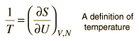

Temperature from the Thermodynamic Identity
Often the definition of temperature is made in terms of the average translational kinetic energy of the particles; this is called the kinetic temperature. An alternative defintion of temperature can be made from the thermodynamic identity:
|
Thermodynamic identity: "d" denotes the total differential of the associated quantity |
|
If we hold the volume constant, this leads to an expression for temperature as a partial derivative of the entropy with respect to the internal energy.
|  |
|
This definition implies that you are holding both the volume and the number of particles constant in taking the derivative. This can be applied to the expression for the entropy of a monoatomic ideal gas:

Taking the partial derivative of this with respect to U to get the temperature requires some gymnastics with the logarithms. Using the rules for the logarithms of products allows us to express the logarithm as just ln(U3/2) plus some other log terms which do not contain U and therefore will drop out when the derivative is taken. Then remember that ln(U)3/2=3/2ln(U) and that the derivative of ln(U) is just 1/U. This finally gives us:
This relationship for the internal energy is just that which is obtained from equipartition of energy. Since the internal energy of a monoatomic gas is just the translational kinetic energy of the molecules, this is in agreement with the kinetic temperature mentioned above, so the two definitions of temperature are equivalent for this case.
Internal energy concepts
Entropy concepts
Reference
Schroeder
Ch 3
| HyperPhysics***** Thermodynamics | R Nave |